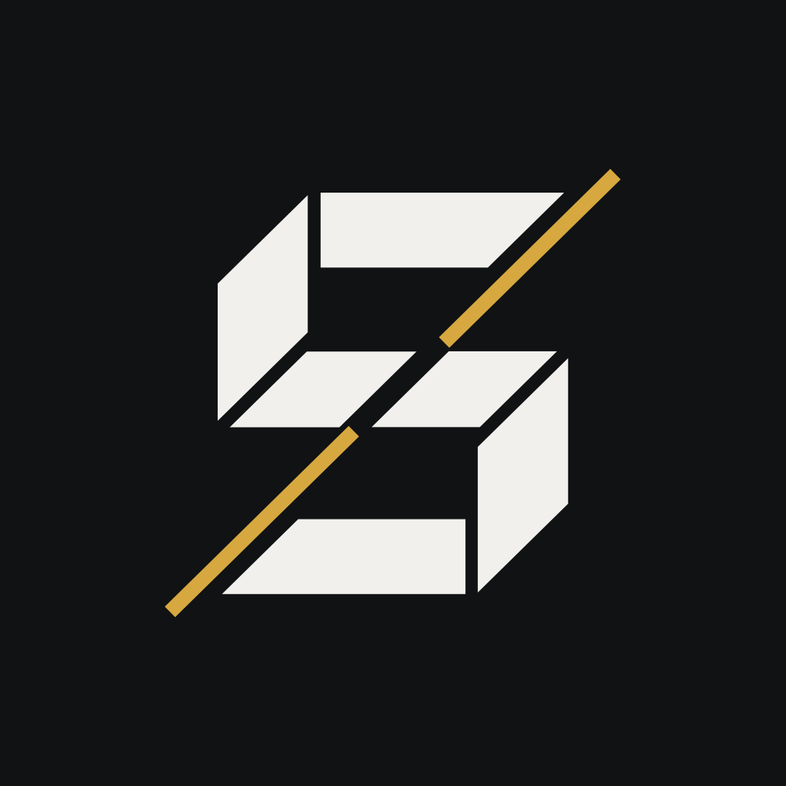

CS2 media brand
Data-backed player POV.
STRAFIO turns Counter-Strike 2 matches into broadcast-quality videos from the player's own perspective, with team comms, round-level context and performance data on screen.
Follow the shorts
@strafio.cs2 on every platform

- Player POV only
- Team comms
- Data from the demo
- Vertical shorts
What we do
The game comes first. The graphics explain it.
Full player POV
One player's view of the whole match, recorded only while alive, in their own resolution and viewmodel.
Team comms
Only the player's own team is heard, with the speaker's name shown on screen.
Round data
Economy, utility and kill context drawn as light on-screen graphics that never cover the action.
Shorts
Vertical highlights of the best moments for YouTube Shorts, TikTok and Instagram Reels.
How match data is used
Everything on screen comes from the match itself.
- We start from a match's demo file and its published match data.
- Rounds, kills, positions, economy and utility are read directly from the demo. Nothing is estimated or invented.
- The match is replayed in CS2 from the chosen player's point of view and recorded.
- The video is finished with STRAFIO graphics and published with a description that credits the player and the match.
We use FACEIT match and player data to identify matches and players and to give viewers accurate context. Player names and statistics are shown as published by FACEIT. We do not use the data for anything other than producing these videos.